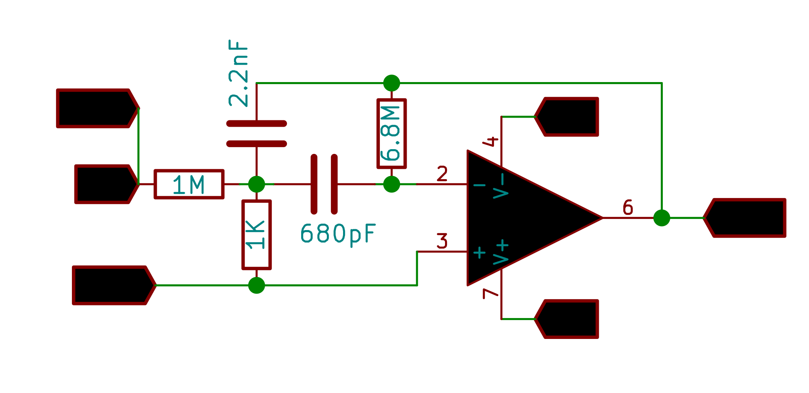
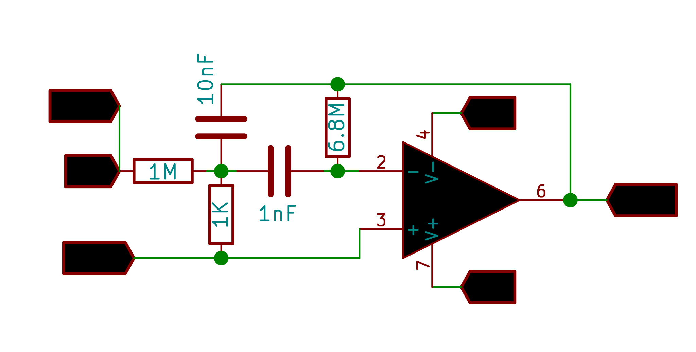

Bode Plots
Multiple Feedback Band-Pass Filter: 1.6 Khz

Multiple Feedback Band-Pass Filter: : 600 hz

Make the Connections as shown in the figure.
CH1 monitors the original waveform output from W1.
CH2 monitors the filter's output .
Set the frequency range to study the behaviour in, and click on START .
Screenshot